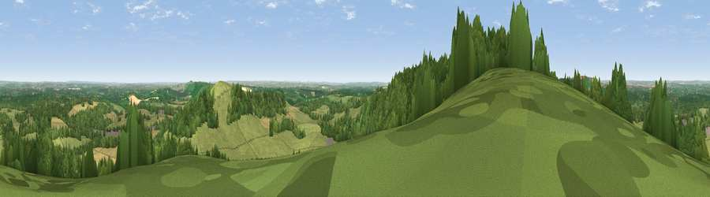

Viewpoint near Old Burghclere
#7761 in England · top 3% of its area beats it · near Old BurghclereWhere it is
The exact computed spot (SU 44900 57675). Click the marker for map links.
The view, rendered

A 360° render of this exact spot computed from the terrain model, tree cover and land cover — summer colours, afternoon light, calibrated against photographs of famous viewpoints. Real trees, hedges and buildings will differ in detail.
The panorama
Grey silhouette: terrain skyline in each direction (720 bearings, Earth curvature and refraction included). Dashed green: skyline with trees (+15 m) and buildings (+8 m) as obstacles. Blue strip: how far the ground is visible on each bearing.
Where the view opens
Wedge length = distance to the farthest visible ground on that bearing (vegetation-aware). Rings at 10, 25 and 50 km.
What fills the view
49% grassland · 35% woodland · 15% cropland ·
Angular shares of the visible panorama (visual magnitude), not map area. Landscape diversity 0.45 (0–1 Shannon).
Key numbers
More beautiful places nearby
The staircase of upgrades: each row has a higher view potential than everything closer. Driving times are estimates from straight-line distance, calibrated against real road routing — check an actual route before setting out.
| Place | Direction | Drive | Score |
|---|---|---|---|
| Viewpoint near Old Burghclere | SSW · 1 km | ~3 min | 67.5 |
| Beacon Hill | ESE · 1 km | ~3 min | 76.7 |
| Martinsell viewpoint | WNW · 28 km | ~44 min | 76.9 |
| Viewpoint near Buriton | SE · 46 km | ~66 min | 80.0 |
| Beacon Hill | SE · 53 km | ~75 min | 85.8 |
| Mottistone Down | S · 73 km | ~97 min | 87.2 |
| St Catherines Hill | S · 81 km | ~105 min | 87.6 |
| Viewpoint near St. Lawrence | S · 81 km | ~105 min | 88.2 |
51.31642, -1.35713 · source: screening · position refined by local search. Computed location — check access rights before visiting.